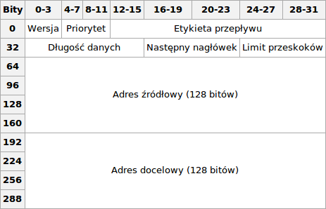

Adresowanie IPv6
Adresowanie IPv6
IPv6 (ang. Internet Protocol version 6) – protokół komunikacyjny, będący następcą protokołu IPv4,
do którego opracowania przyczynił się w głównej mierze problem małej, kończącej się liczby adresów IPv4.
Podstawowymi zadaniami nowej wersji protokołu jest zwiększenie przestrzeni dostępnych adresów poprzez zwiększenie długości adresu z 32 bitów do 128 bitów,
uproszczenie nagłówka protokołu oraz zapewnienie jego elastyczności poprzez wprowadzenie rozszerzeń, a także wprowadzenie wsparcia dla klas usług,
uwierzytelniania oraz spójności danych. Protokół jest znany także jako IP Next Generation oraz IPng
Podstawowy nagłówek protokołu składa się z następujących pól:
Wersja (4 bity) – definiująca wersję protokołu, w przypadku IPv6 pole to zawiera wartość 6 (bitowo 0110)
Klasa ruchu (8 bitów) – określa sposób w jaki ma zostać potraktowany pakiet danych. W poprzedniej wersji protokołu pole to nazywało się Type of Service,
jednak ze względu na to, że w IPv6 stosowane są inne mechanizmy priorytetowania danych, nazwę tego pola zmieniono
Etykieta przepływu (20 bitów) – pomagające odróżnić pakiety, które wymagają takiego samego traktowania (ich pole klasy ruchu ma tę samą wartość)
Długość danych (16 bitów) – wielkość pakietu, nie wliczając długości podstawowego nagłówka (wliczając jednak nagłówki rozszerzające)
Następny nagłówek (8 bitów) – identyfikuje typ następnego nagłówka, pozwalając określić czy jest to nagłówek rozszerzający czy nagłówek warstwy wyższej. W przypadku tego drugiego, wartość pola jest identyczna z wartością pola w protokole IPv4
Limit przeskoków (8 bitów) – określa ilość węzłów, po odwiedzeniu których pakiet zostaje porzucony. W poprzedniej wersji protokołu pole to nosiło nazwę time to live i zawierało liczbę skoków, która była zmniejszana przez każdy odwiedzony węzeł
Adres źródłowy (128 bitów) – adres węzła, który wysłał pakiet
Adres docelowy (128 bitów) – adres węzła do którego adresowany jest pakiet
